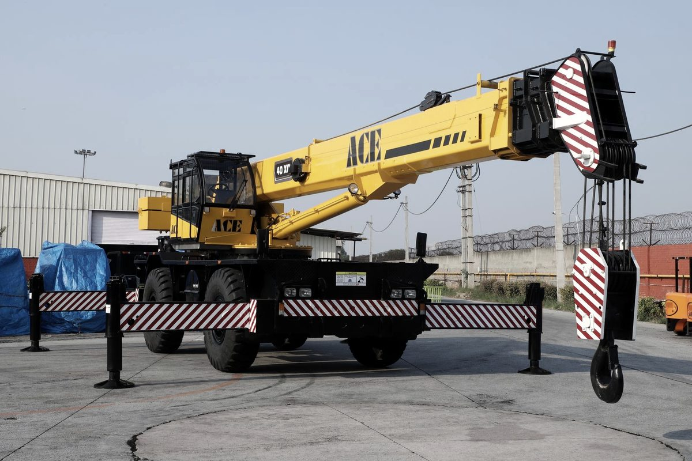

Most cranes can't legally drive to the next job. Rough-terrain cranes always ride trailers, crawlers always tear down, and even roadable truck cranes shed counterweights onto separate trucks. A crane move is a rigging plan, a multi-state permit stack, and a convoy of trailers dispatched in reassembly order — and big carbody loads often land in superload territory.
A crane lifts things for a living. What it does not do, outside a few narrow exceptions, is drive itself to the next job legally. The moment a crane changes sites, it stops being a lifting machine and becomes a freight problem — an oversize, overweight, multi-trailer freight problem. This is how that problem gets solved from the dispatch desk.
Know which machine you're moving
Three crane types, three completely different moves.
- Truck-mounted and all-terrain cranes are built for the road, but almost never road-legal in working trim. Fully dressed, axle weights blow past what states allow. Standard practice: strip the counterweights — sometimes the jib and rigging gear too — and run them behind the crane on separate trucks.
- Rough-terrain cranes don't get a vote. No highway gearing, no highway suspension, no legal axle spacing. Every RT crane rides a trailer, usually a lowboy or removable gooseneck (RGN).
- Crawler cranes are a full teardown, every time. Boom sections come off. Counterweights come off. On bigger machines the crawler side frames come off too. What's left — the carbody — is often still the heaviest single piece on the move.
The legal envelope you're fighting: 8'6" wide, 13'6" tall, roughly 53' of trailer, 80,000 lbs gross. A crawler carbody can bust all four at once.

The teardown
Disassembly starts with paper: the manufacturer's transport drawings list the weight, dimensions, and lift points for every removable component. Counterweight slabs come off and stack like plates. Lattice boom breaks down into sections and inserts. Hook blocks, jibs, and spreader bars ride as loose freight. Each piece gets weighed and measured, because each piece is about to become its own load with its own permit math. Guessing at component weights is how trucks get turned around at scales.
One crane, many trailers
Component dictates trailer:
- Carbody: lowboy or RGN, frequently with a jeep dolly, flip axle, or stinger added to spread the weight across more axles.
- Boom sections: step decks and flatbeds; long lattice sections may need stretch trailers.
- Counterweights: short, dense, and brutal on axle groups. Heavy-rated flatbeds, blocked and chained, weight centered over the axle spread.
Sequencing is where moves fall apart. The assist crane, mats, and crawler frames have to land before the carbody, and the carbody before the counterweights — because the machine that unloads those counterweights hasn't been rebuilt yet. Dispatch trucks in reassembly order, not in whatever order they finished loading.
Weight distribution decides the permit
Gross weight is half the fight. States permit by axle group: how much sits on each group and how far apart the groups are. That's why a carbody move grows axles — every jeep or flip axle added spreads the same load thinner across the pavement and opens up routes a shorter combination can't legally touch. Position the load wrong on the deck and the axle numbers fail even when the total is fine.
Permits, escorts, and superload territory
Cross any line of the legal envelope and every state on the route wants its own oversize/overweight permit, each with its own rules on travel hours, weekends, and routing. Push far enough past the thresholds — and a big crawler carbody often does — and you're into superload territory: engineering reviews, bridge analysis, route surveys, sometimes utility crews lifting lines ahead of the load. Lead times stretch from days to weeks. Full breakdown in What Is a Superload? and the Oversize Load Permits Guide.
Escorts scale with the load. Over-width draws pilot cars. Over-height puts a height pole out front, proving every wire and bridge before the load reaches it. Some states put law enforcement on superloads and dictate the exact hour the convoy rolls.
Reassembly is half the job
The move isn't done when the trucks arrive; it's done when the crane passes function checks. That means ground prep and matting rated for assembly loads, an assist crane sized for the heaviest component, boom assembled on cribbing and pinned in sequence, counterweights hung, and the manufacturer's checklist walked before the first lift. The same Industrial Rigging discipline that took the machine apart puts it back together — ideally the same crew, because they know where every pin went.
Bottom line
- Rough-terrain cranes always ride trailers, crawlers always tear down, and truck or all-terrain cranes usually shed counterweights onto separate trucks.
- The legal envelope is 8'6" wide, 13'6" tall, ~53' long, 80,000 lbs gross — a crane carbody can exceed all four at once.
- States permit by axle group, not just gross weight. Added axles open routes.
- Dispatch trucks in reassembly order. Counterweights are useless before the carbody is rebuilt.
- Superload thresholds vary by state and add engineering reviews and weeks of lead time — start permits before you book iron.
Moving a crane is a coordination job: one rigging plan, a stack of state permits, and a convoy of trailers that all have to arrive in the right order. That's the work we coordinate every week. Start with Heavy Haul Transport, or get a quote with the make, model, and configuration — we'll build the load plan straight from the transport drawings.